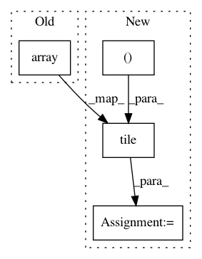

e58f862a09a16461777a2f61566a917a7e2b717c,geomstats/geometry/hyperboloid.py,Hyperboloid,belongs,#Hyperboloid#Any#Any#,73
Before Change
if point_dim is not self.dimension + 1:
if point_dim is self.dimension and self.coords_type == "intrinsic":
return gs.array([[True]])
return gs.array([[False]])
sq_norm = self.embedding_metric.squared_norm(point)
euclidean_sq_norm = gs.linalg.norm(point, axis=-1) ** 2
euclidean_sq_norm = gs.to_ndarray(euclidean_sq_norm,
After Change
if point_dim is self.dimension and self.coords_type == "intrinsic":
belongs = True
if gs.ndim(point) == 2:
belongs = gs.tile([belongs], (point.shape[0],))
return belongs
sq_norm = self.embedding_metric.squared_norm(point)
euclidean_sq_norm = gs.linalg.norm(point, axis=-1) ** 2
In pattern: SUPERPATTERN
Frequency: 3
Non-data size: 4
Instances
Project Name: geomstats/geomstats
Commit Name: e58f862a09a16461777a2f61566a917a7e2b717c
Time: 2020-04-08
Author: ninamio78@gmail.com
File Name: geomstats/geometry/hyperboloid.py
Class Name: Hyperboloid
Method Name: belongs
Project Name: geomstats/geomstats
Commit Name: 53bcacbc79aa232f5582bdb21d920cf8c5050ea9
Time: 2020-04-13
Author: ninamio78@gmail.com
File Name: geomstats/geometry/special_orthogonal.py
Class Name: SpecialOrthogonal
Method Name: skew_matrix_from_vector
Project Name: geomstats/geomstats
Commit Name: e58f862a09a16461777a2f61566a917a7e2b717c
Time: 2020-04-08
Author: ninamio78@gmail.com
File Name: geomstats/geometry/hypersphere.py
Class Name: Hypersphere
Method Name: belongs